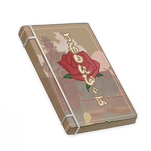

Inazuma · Books & Literature
The Saga of Hamavaran
Pursina’s three-volume Inazuma light novel follows a Sumeru marine-biology student and a talkative shikigami, with its cross-cultural comparison of spirit pacts kept within the novel’s fictional frame.

A Sumeru Novel Published in Inazuma
The Saga of Hamavaran is a three-volume Inazuma light novel credited to Pursina, a writer from Sumeru. Its first volume is a publisher’s foreword: it introduces the international recruitment drive, thanks Kanjou Commissioner Hiiragi Shinsuke, and presents Hamavaran as a Sumeru scholar who travels to Inazuma.
The title and preface make the series sound like a heroic historical chronicle, but the later volumes read as a present-day comic novel. The characters and their adventures belong to the fiction published by Yae Publishing House.
Volume II: The Thesis and the Storm
The second volume introduces Hamavaran as a marine-biology graduate student sent to the “land of thunder and lightning.” During a storm at sea, a voice outside his cabin recognizes his real worry: delaying graduation if his thesis is not finished.
Hamavaran argues with the unseen speaker instead of fearing the storm. Once the ship reaches shore, the voice is gone, and he guesses it may have been a ghost. The passage is a comic opening to the novel’s Inazuma adventure, not a historical voyage by a named Sumeru hero.
Volume III: A Shikigami and Two Traditions
The voice returns as a talkative young shikigami who says she is not a ghost. When Hamavaran asks how she relates to her summoner, she compares it to “ghost-calling.” He recognizes a rough equivalent in Sumeru’s “spirit-warding.”
The novel describes both as pacts involving a real name and observes that the idea of commanding someone by knowing their name appears in different mystical traditions. This is an in-fiction scholar’s comparison, so it suggests a recurring motif without proving that every regional practice works identically.
What the Series Establishes
The preface supplies the author credit and the fiction’s cross-cultural setup. Volumes II and III provide a light story about study, travel, and an improbable companion; their clearest lore-bearing passage is the protagonist’s comparison of spirit traditions.
The book does not recount King Deshret’s history or establish an ancient Sumeru chronology. Its title’s “war records” sense should not be mistaken for a primary historical document.
This is an original CoreGG reading guide, not an official HoYoverse article or a reproduction of the game text. Source links below identify the records used so you can check the original context.
Sources & references
Check these sources for the original game text and reference trail.